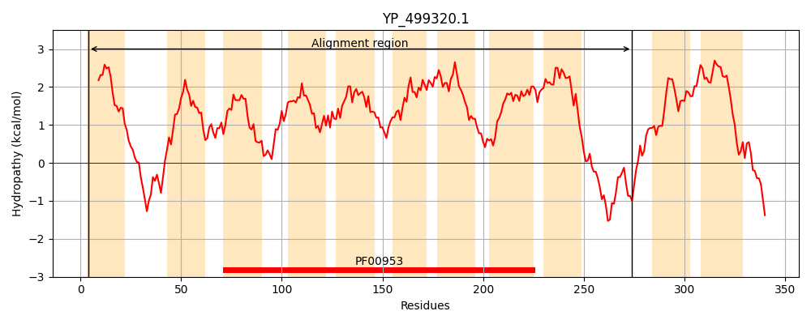
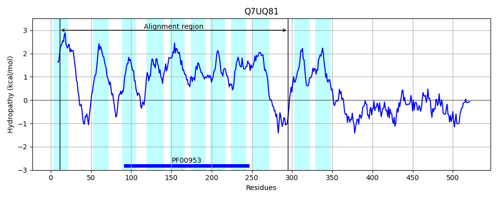
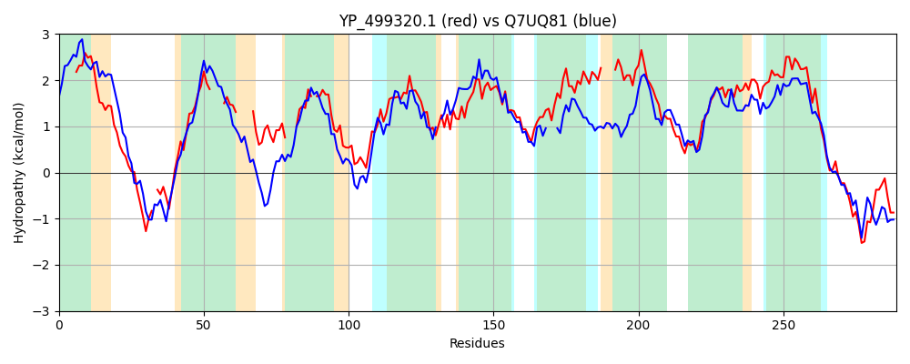

Hit Accession: Q7UQ81
Hit TCID: 9.B.146.1.1
Hit Description: gnl|BL_ORD_ID|15580 gnl|TC-DB|Q7UQ81|9.B.146.1.1 Putative undecaprenyl-phosphate N-acetylglucosaminyltransferase OS=Rhodopirellula baltica (strain SH1) GN=murG PE=4 SV=1
Mach Len: 289
e:0.000000
Query TMS Count : 11
Hit TMS Count: 11
TMS-Overlap Score: 7.350000
Predicted Substrates:None
BLAST Alignment:
Score: 405 , Bit scores: 160 bits, E-value: 8.5e-45, Alignment length: 289, Percentage identity: 34
Query: 4 LLLVAVTMIVSLTITPIVIAISKRLNLVDKPNF-RKVHTKPISVMGGTVILFS----FLIGI-----WIGHPIETEIKP---LIIGAI-IMYVLGLVDDIYDLKPYIKLAGQIAAALVVAFYGVTIDFISLPMGTTIHFGFLSIPITVIWIVAITNAINLIDGLDGLASGVSAIGLITIGFIAILQAN----IFITMICCVLLGSLIGFLFYNFHPAKIFLGDSGALMIGFIIGFLSLLGFKNITIIALFFPIVILAVPFIDTLFAMIRRVKKGQHIMQADKSHLHHKL 274
L+ +A I L + P+V A + R+ LVD P+ RK+H +PI++ GG + + FL+GI W TE+ +++GA + ++GL+DD + L+ KL Q A++V G + +SL G I G +IP++V+W++ NA+NL+DG DG+A+ +G G +A+L A+ + L G+L+GFL +N PA IFLGD+G++MIG ++G L++ + + + P+ IL +P D+ A+IRR G+ + D+ HLHH L
Sbjct: 11 LVTLAAAFIAMLVLVPVVRAFAIRVGLVDNPDAERKLHDRPIALAGGLAVFIATGIAFLVGIAYESGWAEFGKMTELSSRWFVLLGASSAILIVGLIDDKWALRGRQKLLAQCVIAMIVVGSGTVMRSVSL-FGFEIPLGIFAIPVSVLWLLLAINALNLLDGADGMAT---TVGAFVCGGLALLSASSGHSASTVIAATALCGALLGFLVFNRPPATIFLGDAGSMMIGLMVGVLAMWCSLKESAVVVAAPVAILVLPLFDSTAAIIRRWMTGRSMYATDRGHLHHLL 295 | Protein Hydropathy Plots: |
|---|
|  |  |
Pairwise Alignment-Hydropathy Plot:
|
|---|
|  |